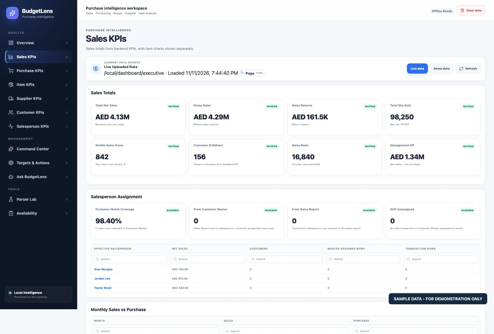
View full image ↗Sales performance
Sales totals, returns, transaction activity, and operational indicators in one unified sales KPI view.
BudgetLens transforms ERP exports into management-ready dashboards, AI-assisted answers, targets, alerts and executive briefings - while keeping operational data under the company's control.
BudgetLens gives finance, sales, purchase and leadership teams a practical analytics layer over existing ERP exports. No warehouse rebuild. No complex dashboard project. No need to move core commercial data into a cloud analytics stack.
Sales, purchase and customer reports are automatically profiled, mapped and standardized into a governed local analytical workspace.
Executive KPIs, entity intelligence, targets, alerts and role-specific views turn raw reports into management action.
Ask BudgetLens answers business questions using the same governed local data that powers the dashboards and management briefings.
Explore real BudgetLens interface captures from a demonstration workspace—from executive decision-making and commercial KPIs to local analytics and license administration.
All screenshots use illustrative sample data and show interfaces, not production customer results. Select any image to enlarge it.
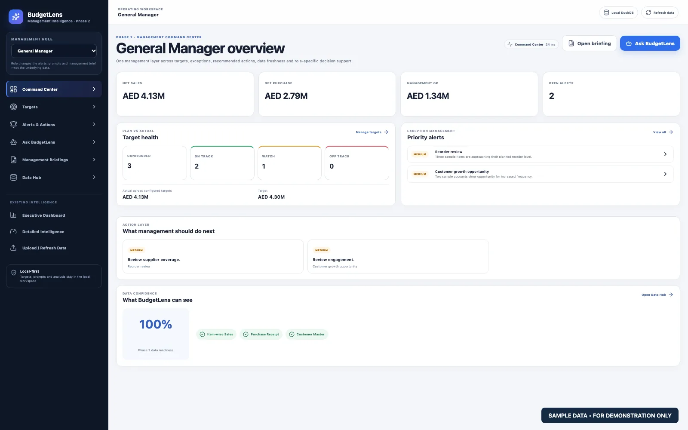
View full image ↗The General Manager command center brings together sample net sales, purchases, gross profit, target health, and priority alerts—so leadership can quickly see what deserves attention.
Follow the numbers from sales and purchasing summaries into items, customers, suppliers, and the people behind revenue.

View full image ↗Sales totals, returns, transaction activity, and operational indicators in one unified sales KPI view.
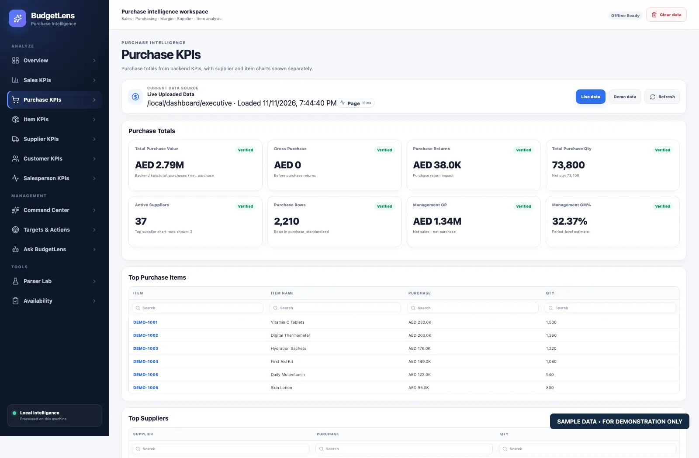
View full image ↗Purchase volumes, supplier activity, returns, and purchasing KPIs at a glance.
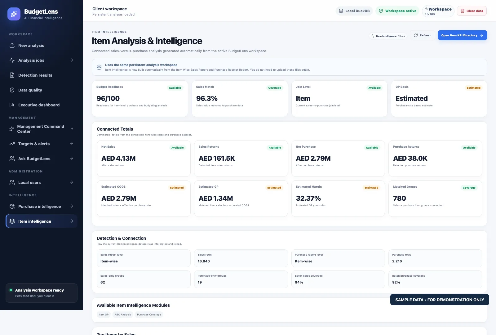
View full image ↗Connected sales and purchasing data, item-level coverage, estimated gross profit, and matched transaction summaries.
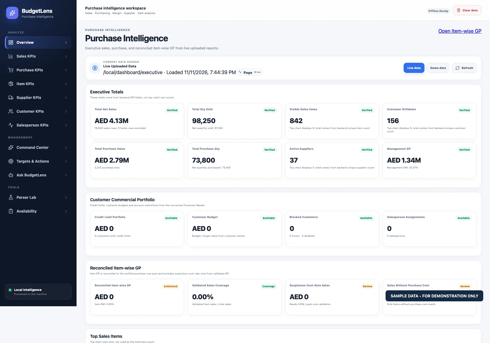
View full image ↗Purchase trends, supply-side metrics, and reconciled insights organized for purchasing decisions.
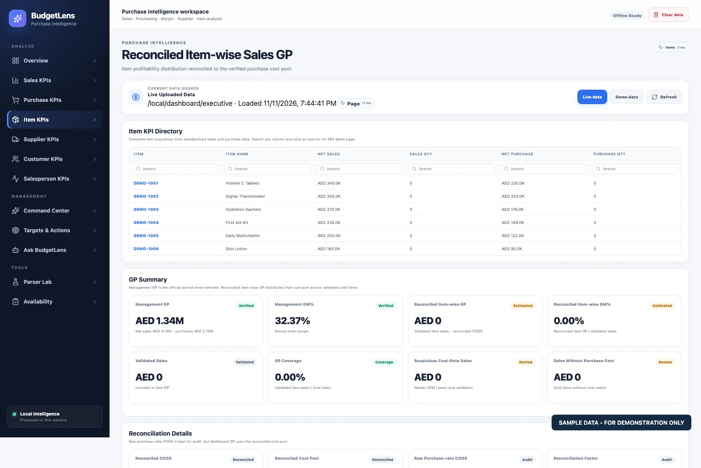
View full image ↗Searchable item records and profitability-oriented analysis to move from totals to individual products.
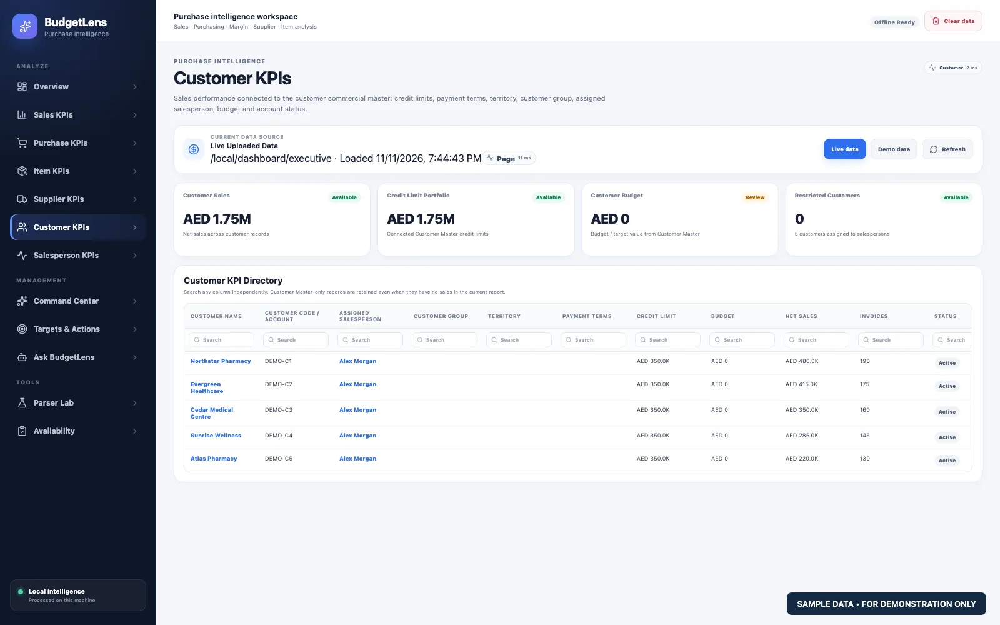
View full image ↗Customer KPIs and a searchable customer directory for identifying commercial patterns.
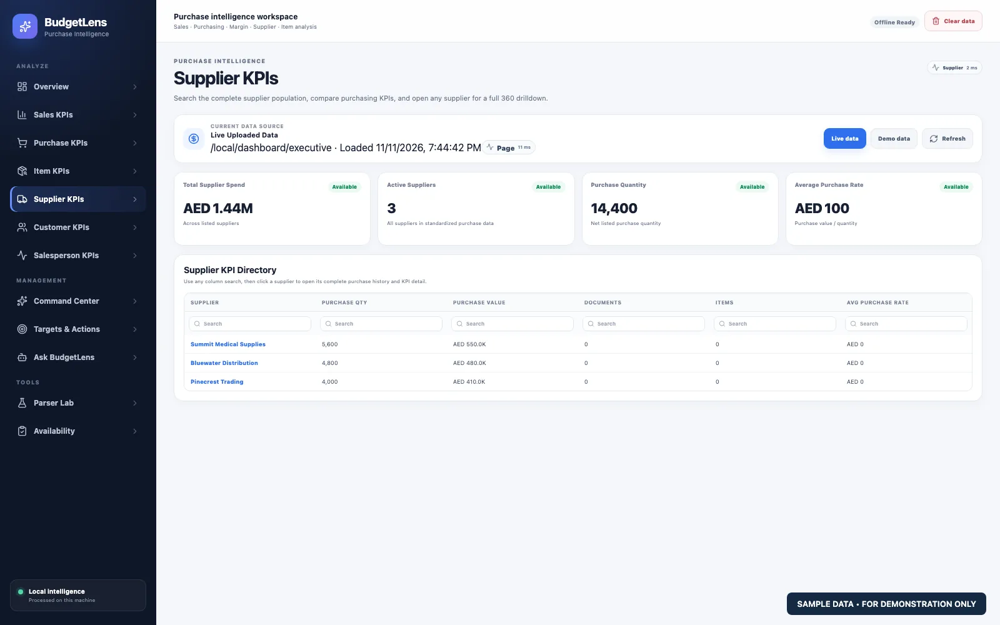
View full image ↗Supplier KPIs and a supplier directory that brings purchase relationships into view.
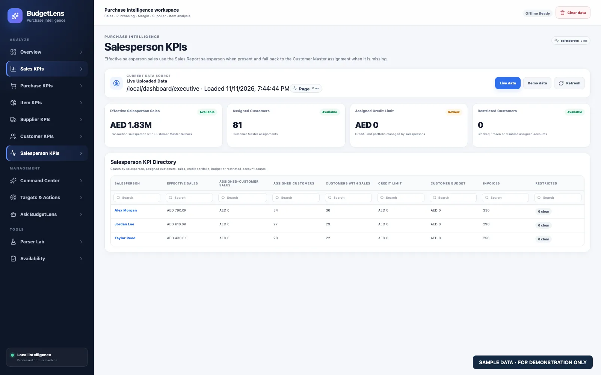
View full image ↗A focused performance view for sales teams and their commercial contribution.
See how the question workspace fits alongside central administration and license management.
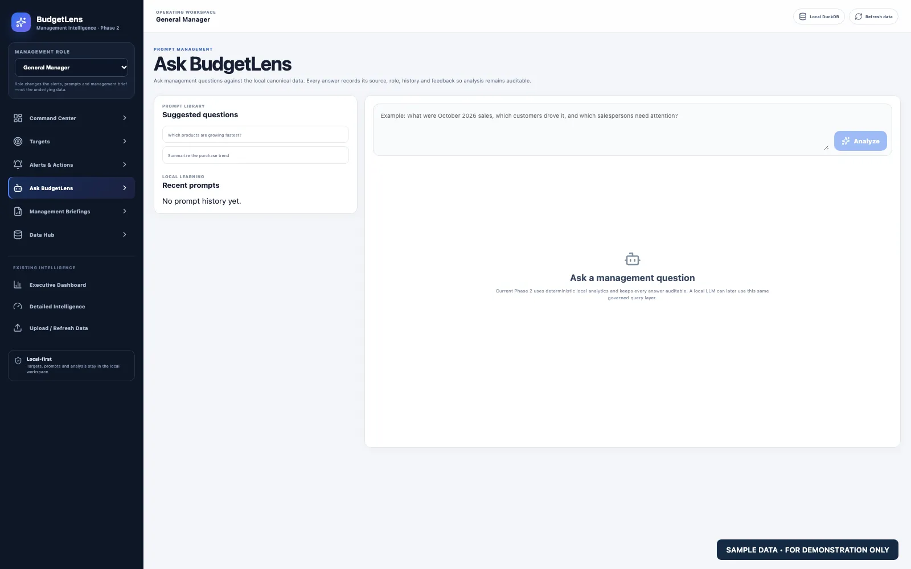
View full image ↗A natural-language question workspace designed to bring management questions closer to governed business analytics.
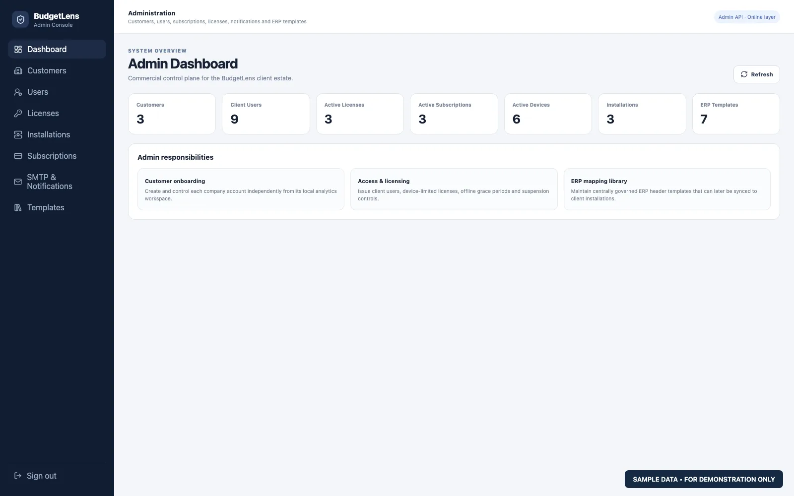
View full image ↗An overview of customers, licenses, subscriptions, devices, and administrative responsibilities.
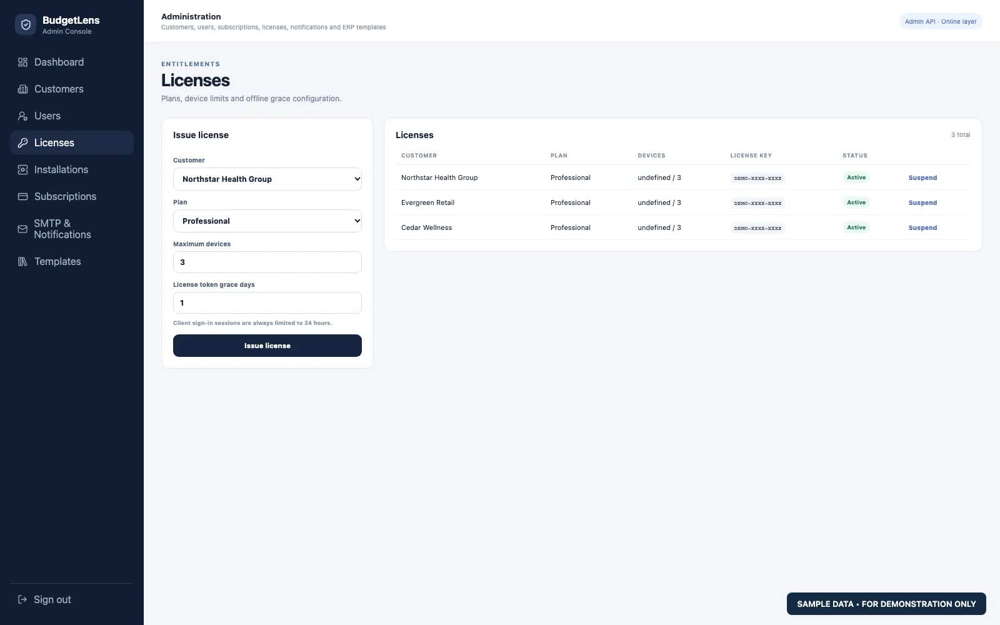
View full image ↗A dedicated interface for managing customer licensing, plan selection, and activation status.
BudgetLens separates the commercial control plane from the analytical data plane. Licensing, subscriptions and installations can be managed centrally while the ERP data itself remains on the client environment.
Only what is needed to operate the product.
Where the company's analytics actually run.
BudgetLens combines deterministic analytics with natural-language interaction. The goal is not to replace reports with AI, but to make trusted business intelligence easier to understand and act on.
The commercial case is straightforward: less repetitive reporting work, faster management visibility, lower dependence on custom BI development, and stronger control over sensitive operational data.
Replace repeated consolidation, spreadsheet preparation and management-pack assembly with reusable local analytics.
Leadership sees the same governed numbers across dashboards, targets, alerts and AI-assisted questions.
Sales, purchase, pricing and customer data can stay inside the company's own environment.
BudgetLens adds an intelligence layer above existing exports instead of forcing an ERP migration or large BI transformation.
Businesses with meaningful sales, purchase and customer volumes that still rely heavily on Excel or static ERP reports.
Companies that want modern analytics and AI assistance without routinely sending operational datasets to a third-party cloud platform.
Organizations where analysts spend too much time preparing numbers and too little time interpreting them.
Teams using ERPNext, SAP, Oracle, Odoo, Dynamics and similar systems where report exports are available but insight remains fragmented.
Connect real ERP exports, validate management KPIs, confirm the local deployment model and prove the operational value before a wider rollout.